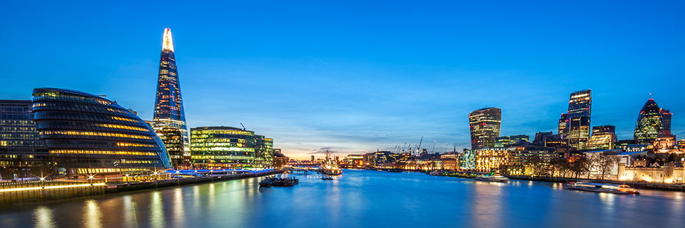

Planning your move to the UK? Whether you're arriving on a student visa, work visa, or just exploring
your options, we've got you covered! Our comprehensive guide is designed to make your transition
smooth and hassle-free.
From must-visit places and essential shopping lists to finding the perfect rental home and completing
key formalities, we provide all the information you need in one place. Discover tips on setting up a
bank account, getting a SIM card, understanding public transport, and more—so you can settle in with
confidence.
Start your UK journey the right way—explore our guides and make your move stress-free!
Before Entering UK

For
International Transactions, please change your debit/credit card into VISA or Mastercard if your
existing card is Rupay.
Things to know about house systems:
Keep money saved for deposit (Usually 2 months rent amount is deposit plus the first month rent)
Types of House: 1. Student Accommodations
These are living spaces designed specifically for students, often located near universities or
colleges. They can be private rooms or shared with other students. They may come with
all-inclusive
rent (including utilities, internet, etc.) and often feature communal spaces like kitchens,
lounges,
or study areas. Examples include dormitories, student flats, and purpose-built student
apartments.
2. Studio
A studio is a small, self-contained apartment. It typically consists of one room that combines
the
living, sleeping, and kitchen areas, with a separate bathroom. This type of accommodation is
great
for individuals who want privacy and prefer to live independently but don’t need a lot of space.
It’s a common choice for young professionals or students in need of a compact living space.
3. Shared Houses
This refers to a house that is shared by multiple people, typically with each person having
their
own bedroom but sharing common areas like the living room, kitchen, and bathroom. This
arrangement
is common among students, young professionals, or people who want to save on rent. Shared houses
may
come in various sizes, from smaller homes with just a few housemates to larger houses with many
tenants.
Each type of accommodation caters to different needs and lifestyles.
If you already have a valid license in India, you can apply for an international driving license.
The international driver's license is valid for one year from the date you enter the United
Kingdom.
You can drive a two-wheeler or a four-wheeler with adequate insurance and either own or rent the
vehicle.
By the time the validity period expires, try to obtain a valid UK license so that you can
continue
driving beyond one year.
It is preferable to package common nonfragile items to the UK if you already have a reliable
person
in UK rather than wasting a lot of money on airline luggage. To obtain a quote for the package,
kindly locate a local-to-international postal service station.
Since it would be a waste of money to install and maintain an international pack, there is no
need
to bring the Indian SIM card here. It's not worth it. Please get another SIM card specifically
for
use at the airport and abroad. You can also open and keep another bank account specifically for
use
abroad. Since you may have already connected your official documents to your current SIM card,
it
would be best to keep it in India with your family or another trustworthy person to avoid having
it
blocked in the future.
To convert an Indian SIM card to an eSIM, you can typically send an SMS to your network
provider's
designated number with the keyword "eSIM" followed by your registered email address, which will
then
send you a QR code to scan on your phone to activate the eSIM. Most major Indian providers like
Airtel, Jio, and Vi support this process, and you should check your specific carrier's
instructions
for exact details.
Until your bank account is set up, cash is primarily required for travel, accommodation rent,
grocery expenses, and mobile recharge. Therefore, it's safe to take out about £500 when you get
to
the UK. Avoid using top-up debit cards or forex cards since you will only be able to use that
card
to spend the remaining balance. Money cannot be transferred or withdrawn without paying taxes.
Therefore, it is preferable to withdraw and keep the pounds.
BEWARE of cash being stolen while living in sharing on entering UK because it has happened a
lot.
SO KEEP IT SAFE!
You can use an international adapter if you want to utilize your gadgets here, however the
devices
might not last long because of the voltage difference. Therefore, avoid purchasing phones or
laptops
before traveling to the UK, as you will have dependable contracts once you arrive. Therefore,
save
money and purchase it once you're in the UK. Use a high-quality, professional, international
adaptor
if you have already purchased one. https://amzn.in/d/39BHdic
Bringing spices, coconut oil, or kitchenware in your flight luggage is not a problem. It is
advised
to pack solely Indian items in your suitcase rather than any common commodities that are sold
all
over the world. Don't buy phones, laptops, or jackets from India, you will get better ones here.
The
list of items to purchase from India will be explained below.
Bathroom Napthalenes, Belt, Brush, ToothPaste(Expensive in UK), Computer Glasses/Specs,
Containers,
Hangers, Induction Stove, Inflatable Bed(If Needed), Kerchiefs, Laptop Bag, Lock & Keys, Medical
Kit
(Medicines, Cough syrup, All types of common disease medications), Nail Cutter, OTG & USB Cable,
Pakkad,
Peeler, Pen Drive, Ball Pens, Plate, Glass, Spoons, Powerbank, Purse/Wallet, Ropes, Sandals,
Shampoo &
Deo, Shaving Kit, Clothes (Shirt, Pants, Summer Clothes(Explained below)), Foam Base Shoes, Soap
(Bath &
Wash), Sun Glasses, Towel, Umbrella, Utensils.
Indian Spices - Garam masala, turmeric, red chilli powder, asafoetida (hing), cumin,
coriander
Ready made - Pickles, papad, Tea (if you have a favorite brand like Tata, Taj Mahal, or Wagh
Bakri)
Clothing - Ethnic wear (kurta, saree, sherwani) for festivals/weddings, Tailored formal clothes
— cheaper
in India
Medicines - Dolo 650, Crocin, Vicks, Cough Syrup, Pain Relief Volini Spray, Moov, Ayurvedic
Basic kitchen tools (belan, chakla, idli stand, small mixer if voltage compatible) & Pressure
Cooker
Change your past education from specific places to India. For example, Anna University, India or
HSC, India
with percentage. Mention your VISA Status. Mention clearly about International Driving License
if you have.
Make your resume ATS friendly. Please research on the web about ATS friendly resumes. Do not
mention passport
details or any official details except VISA status. Do Not include photographs in CVs.
Bed bugs are small, reddish-brown insects that feed on human blood, often hiding in mattresses,
furniture,
and cracks in walls. They spread through luggage, clothing, and second-hand furniture, making
hotels and shared
accommodations common hotspots. Regularly inspect and vacuum bedding, furniture, and carpets to
catch infestations
early. Use protective mattress covers and wash bedding at high temperatures to kill any hidden
bugs. Be cautious
when buying second-hand furniture and consider professional pest control if an infestation
occurs.
OTT platforms like Netflix, Amazon Prime, Disney+, and Hotstar offer region-specific content,
meaning the
library available in India may differ from what you get in the UK. Most subscriptions remain
valid internationally,
but some services may require a change in payment method or address based on your new location.
Netflix and Amazon
Prime (some of it) allow you to use the same account globally, but your content selection will
depend on the
country's licensing agreements. Disney+ Hotstar is not available in the UK, so you may need to
subscribe to Disney+
and Hotstar separately in the UK, and your Indian Hotstar subscription does not work.
There are YuppTV and ChithramTV for Indian television shows
and movies, which is
also an alternative.
Its good to take the LinkedIn Premium from India itself as its expensive in UK.
You can use the
same account globally with Indian payments.
1. LONDON AIRPORTS
A. HEATHROW AIRPORT (LHR)
Location: West London
Nearby Universities:
Imperial College London (40 min – Heathrow Express to Paddington, then Tube)
University College London (UCL) (45 min – Heathrow Express to Paddington, then Tube)
London School of Economics (LSE) (50 min – Heathrow Express to Paddington, then Tube)
University of East London (1.5 hours - Heathrow Express to Paddington, then Tube)
Queen Mary University of London (1.5 hours - Heathrow Express to Paddington, then Tube)
Easiest Commute: Heathrow Express (15 min to Central London)
B. GATWICK AIRPORT (LGW)
Location: South of London
Nearby Universities:
University of Sussex (Brighton, 30 min by train)
University of Surrey (Guildford, 35 min by train)
Easiest Commute: Gatwick Express (30 min to London Victoria)
C. STANSTED AIRPORT (STN)
Location: Northeast of London
Nearby Universities:
University of Cambridge (40 min by train)
Anglia Ruskin University (Cambridge campus) (45 min by train)
Easiest Commute: Stansted Express (45 min to London Liverpool Street)
D. LUTON AIRPORT (LTN)
Location: North of London
Nearby Universities:
University of Bedfordshire (10 min by taxi)
University of Hertfordshire (30 min by train/bus)
Easiest Commute: Train to London St Pancras (35 min)
E. SOUTHEND AIRPORT (SEN)
Location: East of London
Nearby Universities:
University of Essex (Colchester, 50 min by train)
Easiest Commute: Train to Liverpool Street (50 min)
2. MANCHESTER AIRPORT (MAN)
Nearby Universities:
University of Manchester (20 min by train)
Manchester Metropolitan University (20 min by train)
Easiest Commute: Train to Manchester Piccadilly (20 min)
3. BIRMINGHAM AIRPORT (BHX)
Nearby Universities:
University of Birmingham (15 min by train)
Aston University (15 min by train)
Leicester University (1 hour by Train)
Easiest Commute: Train to Birmingham New Street (15 min)
4. EDINBURGH AIRPORT (EDI)
Nearby Universities:
University of Edinburgh (30 min by tram)
Heriot-Watt University (20 min by bus)
Easiest Commute: Tram to City Centre (30 min)
5. GLASGOW AIRPORT (GLA)
Nearby Universities:
University of Glasgow (20 min by bus)
University of Strathclyde (25 min by bus)
Easiest Commute: Bus to City Centre (25 min)
6. BRISTOL AIRPORT (BRS)
Nearby Universities:
University of Bristol (25 min by bus)
University of the West of England (UWE) (30 min by bus)
Easiest Commute: Bus to City Centre (25 min)
7. LIVERPOOL JOHN LENNON AIRPORT (LPL)
Nearby Universities:
University of Liverpool (25 min by bus)
Liverpool John Moores University (30 min by bus)
Easiest Commute: Bus to City Centre (25 min)
8. NEWCASTLE AIRPORT (NCL)
Nearby Universities:
Newcastle University (25 min by Metro)
Northumbria University (25 min by Metro)
Easiest Commute: Metro to City Centre (25 min)
To book flight tickets to the UK, start by choosing a platform such as an online travel agency
(like
Skyscanner or Booking.com) or an airline's official website.
Enter your travel details, including departure and arrival locations, dates, and passenger
information, and search for flights.
Browse through the available options, select the best flight for your schedule and budget,
and
provide your personal details.
Choose any additional options like baggage or seat selection, and then make the payment
using a
credit card, debit card(VISA or Mastercard for International transactions), or other
methods.
After confirmation, you’ll receive your ticket via email and can check in online closer to
your
departure date.
1. Luggage Restrictions
Powerbanks, Electronics like laptops, ipads, tablets go into the hand luggage and all other non
electronics go into main luggage.
Prohibited Items:
Weapons and Firearms: Any form of weapon, including guns, knives, or ammunition,
is
strictly prohibited.
Explosives or Flammable Items: This includes fireworks, flammable liquids (e.g.,
paints, solvents), and gas canisters.
Sharp Objects: Sharp items, such as scissors, razors, or blades, are restricted
in
hand luggage but are allowed in checked baggage (following airline guidelines).
Illegal Drugs: Carrying illegal drugs (even if they are prescription drugs in
India)
could lead to severe legal consequences. If you carry prescription medication, ensure you have a
prescription and check if the medication is allowed in the UK.
Restricted Items:
Liquids and Gels: As per aviation security, liquids, gels, and aerosols in
carry-on
bags are limited to 100ml per container. All containers must fit inside a 1-liter resealable
plastic
bag.
Electronics and Power Banks: Electronic items such as mobile phones, laptops,
tablets, and power banks are allowed in both carry-on and checked baggage, but power banks are
usually restricted to carry-on luggage only and must comply with airline regulations regarding
wattage.
Food and Agricultural Products:
Bringing Food: The UK has strict regulations regarding the import of food,
plants,
and animals. Fresh fruits, vegetables, and meat products are typically prohibited.
Herbal Products: Some herbal products may not be allowed, especially if they are
in
powder form or contain certain active ingredients, so check regulations before you travel.
Dairy Products: You can bring dairy products, but they must be declared to UK
Border
Force. Certain milk and cheese products may be restricted depending on their origin and content.
Currency and Financial Limits:
Bringing Money: You can bring in up to £10,000 or the equivalent in other
currencies
(including Indian Rupees) without declaring it. If you're carrying more than this amount, you
must
declare it to customs.
Gold and Jewelry: You can bring in gold jewelry for personal use. However,
bringing
large amounts of gold or gold bullion may attract attention from customs.
Special Items (Gifts and Souvenirs):
Gifts and Souvenirs: Personal items, gifts, and souvenirs are usually allowed as
long as they fall within the personal use limits. However, you may need to declare items if they
exceed the value limits or quantity restrictions (e.g., excessive alcohol or tobacco).
2. Newly Bought Items
Newly bought items, such as clothing, shoes, or accessories, are generally allowed in carry-on
bags.
However, you may need to declare items if they exceed the value limits or quantity
restrictions.
Also, Its safe to take the electronics(like laptops, ipad, mobiles, tablets) out of the original
box
and carry them in your hand luggage as with the mint box, they ll find it suspicious for
resale.
3. Alcohol Restriction Quantity Limit: If you're bringing alcohol into the UK for personal use, you
are
allowed to bring in
up to 42 litres of beer, 18 litres of wine, or 2 litres of spirits or a combination of these,
provided the total volume doesn't exceed the limits for personal use. Duty-Free: If you're flying directly from India to the UK, you can purchase
alcohol
duty-free, but
you still need to adhere to the quantity limits including the goods inside the luggage. If you
exceed the limit, you may be required to pay duty and tax. Customs Declarations: When you arrive in the UK, if you have more than the
allowed
duty-free limit,
you must declare it at customs.
4. Cigarette and Tobacco Restriction Cigarettes: You can bring up to 200 cigarettes or 100 cigarillos or 50 cigars
or
250g of tobacco for
personal use without having to pay duty or tax.
Other Tobacco Products: If you bring in more than the above limits, you’ll be required to
declare it
and may have to pay customs duties or taxes. Customs Declarations: When you arrive in the UK, if you have more than the
allowed
duty-free limit,
you must declare it at customs.
5. Medication Restriction
A. Prescription Medicines:
Carrying Prescription Medication: If you're carrying prescription medicines, you
must have a valid prescription from a doctor. The prescription should ideally be in English to
avoid
complications at customs.
Personal Use Only: The medications should be for personal use. Carrying
excessive
quantities may raise suspicions that the medicine is for distribution or sale.
Controlled Medicines: Some medications available in India may be classified as
controlled substances in the UK. Examples include certain painkillers, sedatives, or
anti-anxiety
medications. These may require additional documentation, such as a letter from your doctor or a
copy
of your prescription.
B. Controlled Drugs:
The UK has strict laws regarding controlled drugs, including certain narcotics, sedatives, or
stimulants. For example:
Opioid-based painkillers like codeine, morphine, or tramadol.
Benzodiazepines like diazepam, lorazepam, or alprazolam.
If you need to carry these medications, you will likely need an export certificate (also called a
"license to import controlled drugs"). This can be obtained from the UK's Home Office before you
travel.
Declare to Customs: You must declare controlled drugs at customs if you have
them in
your possession. Not declaring them could lead to severe legal consequences.
C. Over-the-Counter Medications:
Medications like paracetamol, ibuprofen, or basic antihistamines are generally not a problem if
they
are for personal use and in reasonable quantities.
However, if you’re carrying larger quantities, you might need to show proof that it’s for
personal
use.
D. Medicine in Original Packaging:
Always carry your medications in their original packaging with clear labeling to avoid issues
during
inspections. If possible, keep the packaging and your prescription or doctor's note together.
E. Special Restrictions for Certain Substances:
The UK has specific restrictions on some substances, like certain herbal or alternative
medicines.
Cannabis-based products and substances that are legal in India might be controlled or illegal in
the
UK, even if prescribed by a doctor in India.
Cannabis-based Medicines: While certain cannabis-based medicines are allowed in
the
UK, they require a specific prescription from a UK doctor. If you're carrying any cannabis-based
product, make sure you have a doctor’s prescription and the product is licensed in the UK.
F. Medications and Airport Security:
When passing through security at airports, all medications are allowed in your carry-on luggage,
but
you must declare them to airport security. If the medication is liquid, it may be subject to the
usual liquid restrictions (usually, liquids over 100ml are not allowed in carry-on bags unless
necessary for medical reasons).
Documentation for Liquids and Needles: If you carry liquid medication, syringes,
or
needles (for insulin or other medical needs), you may be required to show a doctor's note
explaining
the necessity for the medical items.
1. Check In
Head to the check-in counter: If you haven't checked in online, go to the airline's check-in
desk.
For international flights, you'll need to show your passport, visa (if required), and flight
details.
Check-in online (if you haven't): If you've already checked in online, proceed directly to the
baggage drop counter to hand over your checked bags.
2. Baggage Check
Drop off checked luggage: If you have checked luggage, hand it over at the airline's designated
counter. You’ll receive a baggage tag for each piece of luggage.
Confirm baggage weight: Ensure that your checked baggage complies with the airline’s weight
limit to
avoid extra charges. (If you have already any address in the UK of your friends or relatives,
Then I
advise you to parcel the non breaking things to the address and reduce the price of your flight
tickets with less luggage)
3. Security Check
After check-in, proceed to security screening. Here, you'll need to remove your shoes, belt, and
any
metal items, and place them in a tray for inspection.
Electronics: Laptops, tablets, other large electronics, Jackets, overcoats, belts and sometimes
shoes should be taken out of your bag for
scanning.
Liquids: Make sure any liquids are in containers of 100 ml or less, and packed in a transparent
plastic bag or else they ll throw them in the bin without asking(following the airline’s rules).
4. Immigration and Passport Control
For international flights, go to the immigration counter after clearing security. You’ll need to
show your passport, visa (if required), and boarding pass.
The officer will stamp your passport for departure from India.
5. Find Your Gate
After clearing immigration, check the flight information boards for your gate number and
departure
time.
Check your boarding pass to confirm the gate and any additional information.
6. Currency Exchange (If Needed)
If you need British Pounds or other foreign currencies, you can visit a currency exchange
counter in
the airport. (Keep atleast 500 pounds as cash until you get a Bank card after getting into
UK)
Alternatively, consider using an international debit/credit card for purchases at the airport or
upon arrival in the UK.
7. Duty-Free Shopping
After passing through immigration, you can visit the duty-free shops to buy perfumes, cosmetics,
alcohol, chocolates, and other products.
Duty-free shopping allows you to purchase items without paying the usual taxes or duties.
8. Grab Some Food/Drinks
Restaurants and cafes: Airport terminals have plenty of food and drink options. It's a good time
to
have a meal or a light snack before your flight, especially since long flights to the UK might
not
provide a full meal soon after takeoff.
9. Stay Updated on Your Flight
Regularly check the flight information screens to ensure there are no changes to your flight’s
gate
or departure time.
Listen for any boarding announcements or changes.
10. Relax and Wait for Boarding
Once you've completed all the steps above, find a comfortable spot near the gate or in the
designated seating area for passengers traveling on international flights.
Use this time to relax, read, or even use airport Wi-Fi if available.
11. Boarding
About 45 minutes to an hour before departure, boarding will begin. Make sure you're at the gate
and
ready with your boarding pass and passport in hand.
Follow the instructions from the airline staff to board the plane when your group is called.
Enjoy the Flight!
To apply for a UK student visa, first ensure you have been accepted into a UK-based
educational
institution and received a Confirmation of Acceptance for Studies (CAS).
Next, gather the required documents, such as proof of funds(Loan statements, bank statements
with
that required amount, Fixed deposit documents), passport, academic qualifications, and
English
language proficiency(IELTS, TOEFL, UK NARIC(For Professional Course graduates)).
Apply online through the UK government’s official website and pay the visa fee.
After submitting your application, It will redirect you to VFS or before and after that
you’ll
need
to attend a biometric appointment for fingerprint and
photograph submission. Sometimes its required to take a TB Test from the authorised medical
centres
all over India. Find your nearest centre in google.
While waiting for your visa decision, keep track of any updates on your application, and use
the
time to prepare for your travel, such as booking flights, arranging accommodation, and
reviewing
your study plans.
A share code is a unique code used to prove your immigration status or right to
work
or rent in the UK. The code is part of the UK’s digital immigration system, and it is used when
you
need to share your status with an employer, landlord, or other organizations.
The share code is generated from the UK government’s online system and allows third parties to
check
your immigration status without needing to see your physical documents.
What is the Share Code Used For?
Right to Work: Employers can use the share code to verify that you are
legally
allowed to work in the UK.
Right to Rent: Landlords can check your immigration status to confirm that
you
are allowed to rent in the UK.
Immigration Status Verification: You can share your immigration status with
other parties (such as a bank, university, or government services) by providing them with
the
share code.
How to Get a Share Code?
To get a share code, you will need to have a UK immigration status that is recorded digitally,
such
as a Biometric Residence Permit (BRP), a UK Visa, or
EU
Settlement Scheme status.
Here are the steps to get a share code:
Log into the Government Website: Visit the UK Government’s Immigration
Status Check page.(Link provided above)
Sign In: If you’re applying for a share code, you will need to sign in
using
your Gov.uk account. You may also need to provide details such as your passport or BRP
number.
Request a Share Code: Follow the instructions on the website to generate
a
share code. You’ll be asked for your details to confirm your identity.
Share the Code: Once the code is generated, you’ll receive the share
code.
You can then share it with the person or organization that needs to verify your immigration
status.
Validity: The share code is typically valid for 30 days, so make sure to
use
it within that timeframe.
VISIT UNIVERSITY FOR STUDENT REGISTRATION, ENROLMENT, NATIONAL INSURANCE AND LETTER FOR YOUR
BANK REGISTRATION
1. Visit University for Student Details and Enrollment
Student Registration: After arriving in the UK, one of the first things you should
do is visit your university to complete your registration process. This usually involves confirming
your identity, providing any additional documents (like your passport, visa, etc.), and confirming
your course details.
Enrolment: You will officially enroll in your course at the university, which might
require you to sign documents, pay any remaining fees (if applicable), and get your student ID. This
step is essential as it confirms your status as a student at the university.
2. Attend Classes and Get Academic Information
Once you’ve completed your enrollment, you will begin attending your classes as per your timetable.
Make sure to familiarize yourself with the university campus, the location of your classes, and any
other academic requirements, such as course materials or online portals.
Your university will also provide you with information about academic expectations, such as
attendance policies, assessment methods, and support services available to international students.
3. National Insurance (NI) Registration
What is National Insurance? National Insurance (NI) is a system in the UK where
workers and employers contribute to social security, which funds public services like healthcare
(NHS), pensions, and unemployment benefits.
Why is NI Important for Students? As an international student, you’ll need a
National Insurance number if you plan to work while studying (part-time jobs or internships, for
example). You’ll need to provide your NI number to your employer when you start working.
How to Apply for National Insurance Number: You can apply for your National
Insurance number online or by phone, depending on your circumstances. Usually, the university’s
student services office can provide you with more details or assist you in the application process.
Note that you must have the right to work in the UK (as specified by your student visa) to be
eligible to receive an NI number.
4. Letter for Bank Registration in the UK
Opening a UK Bank Account: To manage your finances while studying in the UK, you
will likely need a UK bank account. This is essential for receiving funds, paying bills, and
managing day-to-day expenses.
Required Documents for Opening a Bank Account: Most banks in the UK will require
proof of your identity, proof of address, and proof of student status. The university typically
provides a student confirmation letter or a letter of enrollment, which serves as proof that you are
officially enrolled and studying at the university.
This letter is essential when registering with a bank to open a UK account. Some universities provide
these letters for free or can assist you in getting one. It’s advisable to check with your
university’s international student office about how to obtain this letter.
5. Other Key Points to Remember
Student ID: Keep your student ID safe, as it may be needed for various university
services, accessing libraries, and getting discounts on public transportation.
Health Registration (NHS): If you're eligible, make sure you're registered with the
NHS for healthcare access while you're in the UK.
Student Support Services: Most universities offer support for international
students, including orientation programs, counseling, and visa guidance. Don’t hesitate to ask for
assistance if needed.
Beware of scams targeting international students who may be asked to pay additional fees for National
Insurance (NI) registration. Once you have paid your visa fees and received the appropriate working
rights, you do not need to pay any additional fees for NI registration.
The registration for National Insurance is free. You only need to register to obtain your NI number,
which is required if you plan to work while studying. If someone asks you to pay for the
registration or makes it seem like a chargeable service, be very cautious and report it immediately.
Never share personal details or pay for services that are supposed to be free. Only use the official
government website or contact the university's student services if you need assistance with your NI
registration.
It is important to register with a local GP (General Practice) as soon as you arrive in the UK. This
will ensure you have access to free healthcare services through the NHS (National Health Service).
By registering with the GP, you will be able to see a doctor when needed, receive prescriptions, and
access other healthcare services without incurring any costs, as long as you are eligible for NHS
services. Make sure to bring proof of your address and student status when registering.
You can also register with your university, which may provide additional assistance with the
registration process.
Find a GP local to your area and make an appointment for free NHS services. (Some critical
appointments are done through NHS App services too)
NOTE: Medicines and Prescriptions are to be paid with our own expenses unless you are medically
exempt.
ACCEPTABLE IDENTIFICATION : PROVISIONAL LICENSE, PASSPORT, DRIVING LICENSE(UK),
STUDENT ID
Proof of Identity and Age: Whether you're entering a bar, buying age-restricted
items like alcohol or tobacco, or simply traveling, your ID proves who you are and that you are
legally allowed to participate in certain activities. It’s especially important if you’re under 18
or 21, as many places will require age verification.
Traveling Around: Public transportation services in the UK may require you to show
your ID, particularly if you're using discounted fares available to students or young people. A
student ID or a National Railcard can also be useful for discounted travel.
Access to Services: You may be asked for identification when accessing healthcare,
registering for a bank account, or using other services. For example, your university may request to
see your ID to confirm your identity or grant access to certain facilities.
Emergency Situations: If you find yourself in an emergency or needing assistance,
having your ID with you can help the authorities or healthcare professionals quickly locate your
details and provide appropriate help.
Legal Requirements: In some situations, carrying ID is a legal requirement,
especially if you're involved in a situation where authorities need to verify your identity (such as
during a police stop or in a situation requiring you to show proof of immigration status).
In the context of housing or student accommodation, contractless rooms refer to rooms that do not
have a formal lease or rental agreement. Typically, these rooms are provided on a more temporary
basis, and tenants are not bound by a long-term contract.
If you are staying in a room without a formal contract, it's important to be aware that you may be
asked to leave at any time, especially when the accommodation provider needs the room for other
purposes or when your temporary stay comes to an end.
Always clarify the terms of your stay to understand your rights and responsibilities.
When you're setting up a UK bank account as an international student or new resident, there are
certain steps you need to follow. One of the primary requirements is to provide proof of your
student status or residence. A letter from your university, confirming that you're enrolled and
attending, serves as this proof.
Why Do You Need a Letter from the University/Employer?
Proof of Student Status: The letter from your university/employer confirms your enrollment
and shows that you are a legitimate student/employee. Most banks require this document to verify that you are
eligible to open a personal bank account or a student bank account, which may offer benefits such as fee waivers or discounted
banking services.
Proof of Address: In some cases, universities provide a letter that also confirms
your UK address, which is another requirement for opening a bank account. Alternatively, a utility
bill, tenancy agreement, or letter from your landlord can also work as proof of address.
Direct Bank Visit for Faster Service
While many banks offer the option of applying for an account online, a direct visit to the bank is
often more efficient and faster, especially for international students. It also ensures that the
process runs smoothly and that you have immediate access to your new account.
Contactless payment like Apple Pay or Google Pay or contactless bank card allows you to pay for items by simply tapping your card or smartphone near a
payment terminal, without having to insert your card or enter a PIN (for small amounts). The payment
is processed through near-field communication (NFC) technology. Enable the NFC feature on android
phones and pay with it. For iphones, It's default enabled.
How Does It Work?
Contactless Cards or Devices:
It’s everywhere: You can use contactless payments in almost every shop, restaurant, and public
transport.
Bank Cards: If you have a UK bank card (debit or credit card) that supports
contactless payments, it will have the contactless symbol on it (a wavy line or a small wave
symbol).
Smartphones: You can also use Apple Pay or Google Pay on your smartphone to make
contactless payments. You’ll link your UK bank card to your phone, and then use it to tap and pay.
Making Payments:
In Stores: When you go to a shop or cafe, the payment terminal will display a
contactless symbol. Simply tap your card or phone on the terminal to make a payment.
How much can you spend? For payments under £100, you usually won’t need to enter a PIN. For amounts
over £100, you may need to enter your PIN.
Phone or Watch: If you’re using Apple Pay or Google Pay, unlock your phone (or
smartwatch) and hold it near the contactless reader. You may need to authenticate the payment using
Face ID, Touch ID, or a PIN.
Public Transport: If you’re traveling around London, you can use contactless
payments (Apple Pay, Google Pay, or a contactless bank card) to pay for your journey on buses,
trains, and the Tube. Just tap your card or phone on the reader when entering and exiting.
Student Discounts: Visit discount websites like UNiDAYS or Student Beans, sign up
with your university email, or show your student ID to get access to these offers.
NHS Discounts: NHS staff can use their NHS Discount Card or sign up on NHS-specific
discount sites. Some discounts can also be accessed via apps or on the retailer’s website by
verifying employment.
These discounts are a great way to save money, so make sure to take advantage of them if you're
eligible!
Note : Shop names to buy things are in the brackets mentioned
Essentials for Setting Up Home
Duvet, pillows, bedsheets (IKEA, Argos, Wilko)
Utensils, cutlery, plates (Wilko, IKEA, Asda, Poundland)
Toaster, kettle, microwave (Argos, Currys, Facebook Marketplace)
Clothing for Weather
Winter jacket, boots, gloves, scarves (Primark, M&S, Uniqlo)
Umbrella (If not bought from India, Buy it here. Very important! It will rain)
For Students (if applicable)
Laptop, printer (if not already sorted)
Stationery (B&M, Tesco, Paperchase, WHSmith)
Best Sim Cards: Lebara, Voxi, Lycamobile for international calling
EE, O2, Vodafone for Best Network coverage and data speed but a bit expensive
1. Pay As You Go (PAYG)
No contract, no commitment
You top-up your balance or buy bundles (data + minutes + texts)
Great for short stays, or while you’re settling in
Easy to get — just pick up a free SIM card from stores or order online
2. SIM-Only Monthly Plans
No phone, just the SIM — you use your own phone(unlocked)
Rolling monthly contracts (can cancel anytime)
Usually cheaper and flexible
Good for students and long-term residents
3. Phone + Contract
You get a new phone + monthly data/talk plan
Contract length: 12, 24, or 36 months
You can upgrade or downgrade at any time
If you pay the upfront cost, The mobile plus sim will reach within days and you can pay the monthly
contract prices on direct debit from your UK bank account.
Requires a UK bank account and credit history (can be tricky for new arrivals)
Citymapper – Best app for public transport navigation (especially in London)
Google Maps – Reliable for directions, local businesses, walking routes
Uber / Bolt / Free Now – For taxis and ride-sharing
Trainline – Book and check UK train schedules/tickets
Tesco / Asda / Sainsbury’s / Morrisons / Aldi – Supermarket apps for groceries &
deals
Amazon UK – For just about everything
Monzo / Revolut / Starling Bank – Mobile banks ideal for newcomers with easy account
setup
Wise – For sending money between UK & India at low rates
Splitwise – Great for managing shared expenses with flatmates
Uber Eats / Just Eat / Deliveroo – For food delivery from local restaurants
Rightmove / Zoopla / SpareRoom – Find rooms, flats, and houses to rent
OpenRent – For directly renting from landlords (no agency fees)
CeX / Facebook Marketplace – Buy/sell used stuff locally and second-hand electronics
British Heart Foundation – Great for budget furniture, clothes and home stuff
NHS App – Book GP appointments, view prescriptions, COVID status
UNiDAYS / Student Beans – Get student discounts on brands and restaurants
When you move to the UK, the Google Play Store still shows Indian apps, prices (in ₹), and content
unless you change your region.
For Android Users only, How to Change Region in playstore for UK specific apps:
Open Google Play Store app.
Tap on your profile icon > Settings > General > Account and device preferences.
Under Country and profiles, select United Kingdom.
Follow prompts and add a UK payment method (like a UK debit/credit card).
You can only change regions once per year, so be sure before switching.
Use Splitwise when you are sharing expenses with your roommates in the UK For using Splitwise:
1. Download the app and create an account.
2. Create a group (e.g., your flat name) and invite your roommate.
3. Add expenses like rent, groceries, or bills—Splitwise will split and track who owes what.
4. Settle up manually via bank transfer, then log it in the app.
5. Use recurring expenses for regular bills and attach receipts if needed.
It’s a simple way to stay organized and avoid awkward money talks.
Wise: Best for students sending money to their UK bank account. It offers the real exchange rate,
low transparent fees, and is great for regular bank-to-bank transfers. Remitly: Good for quick transfers and cash pickups. Offers Express (fast but costlier) and Economy
options. WorldRemit: Flexible with options like mobile money, airtime top-ups, and cash pickup. Transfers are
usually fast.
Recommendation: For most new students in the UK, Wise is the best option for fast, reliable bank
transfers.
1. Wise
Best for: Students transferring money to UK bank accounts.
Exchange rate: Mid-market (real) rate—no hidden markup.
Fees: Typically 0.35% to 1% of the transfer amount.
Example: Sending £1,000 from India to the UK = ~₹450–₹900 in fees.
Transfer speed: 1–2 working days.
Perks: Offers a UK bank account (Wise account) + multi-currency card.
2. Remitly
Best for: Speedy transfers and cash pickups.
Exchange rate: Slight markup over mid-market rate.
Fees: Economy transfer: Lower fees or free, but 3–5 days.
Express transfer: Higher fees (₹500–₹1,000), completes in minutes to hours.
Transfer speed: Minutes to 5 days, depending on the option.
Perks: Good for sending money to family back home.
3. WorldRemit
Best for: Flexibility in delivery—bank, cash, mobile.
Exchange rate: Markup over mid-market rate.
Fees: Typically ₹250–₹350 per transfer.
Transfer speed: Often within minutes.
Perks: Works in 130+ countries with mobile money and cash pickup options.
For finding Part-time jobs: 1. Job Portals: Use student-specific websites like StudentJob UK and E4S, or general job portals
like Indeed, Reed, LinkedIn and TotalJobs. 2. University Career Services: Check with your university’s career center for on-campus job
listings. 3. Local Search: Visit nearby cafés, restaurants, and shops to find part-time job ads. 4. Mobile Apps: Download apps like Job Today and the StudentJob app for easy job hunting. 5. Visa Restrictions: For a Tier 4 visa holder, you can work 20 hours/week during term time and
full-time during holidays. For a skilled worker or other work visas, You need to get approval from your employer so that you can earn extra income.
P60 document: A summary of your earnings and tax paid over a full tax year (April 6 to next April
5). You get this from your employer at the end of the tax year, typically in April. P45 document: Issued when you leave a job, showing your earnings and taxes paid up until that point.
You get this from your employer when you exit a job.
For first-time students/workers: P60: You get this after working a full tax year.
P45: You get this when you leave a job.
Phone: Use a strong lock (PIN/fingerprint), enable remote tracking (Find My iPhone/Device), and keep
your phone out of sight in public. Cycle: Use high-quality locks (U-lock + chain lock), park in well-lit, busy areas, and register your
bike. Moped/Two Wheeler: Use anti-theft devices (disc locks, GPS tracker), park in secure areas, and never leave it
unattended.
Always stay aware of your surroundings and take precautions to minimize theft risks.
Congestion Charge (London):
£15/day for driving in central London (weekdays, 7 AM–6 PM).
Exemptions: Electric and some low-emission vehicles.
Pay the fees through TFL website by inputting your registration number by same or next day.
Clean Air Zone (CAZ) Charges/ULEZ Charges:
Applies in various UK cities for vehicles that don’t meet emission standards.
Charges range from £8 to £100/day depending on the city. Petrol (with emission standards) & Electric
vehicles are exempt.
Pay the fees through TFL website by inputting your registration number by same or next day.
Tip: Consider using public transport or driving low-emission vehicles to avoid charges.
Expiry Dates are available for common things in UK where there are none in your home country so
always check dates, look for clearance sections in stores, and store items properly to avoid
waste. Best Before: Quality guarantee (not safety). Use By: Safety date (avoid after this date). Sell By: Retail management (not safety). Near-Expiry Products: Often discounted. Great for immediate use or freezing to extend shelf life.
Stores to Visit: High street stores (Primark (Cheapest rates), H&M), department stores (John Lewis,
Marks & Spencer), and online stores (ASOS, Shein). Deals to Look for: Seasonal sales (e.g., January, July). Clearance sections for discounted items. Student discounts via UNiDAYS or Student Beans. Sign-up offers for first-time customers. How to Find Deals: Check sale signs, look for flash sales, and use comparison websites.
These tips will help you find good deals and save money while shopping for clothing in the UK.
DRUNK DRIVING IS A SERIOUS OFFENCE HERE UNLIKE INDIA'S FINES AND LETTING GO Fines range from £100 to £5,000. Driving ban for at least 12 months and you lose points on your license (12 points is the maximum
points on your license and then ban). Up to 14 years in prison for serious cases, especially if injury or death occurs.
Immediate arrest and breathalyzer testing if suspected. No leniency or warnings like in some other countries, such as India.
Impact on car insurance premiums. Drunk driving is strictly enforced, and the UK has zero tolerance for it.
If you exceed the parking time or go without paying the parking charges or park in double yellow line or Park in any no parking zone, You can get immediate fines.
IF BANK TRANSFERRED AND FELL INTO SCAM, LEGALLY YOU CANT DO ANYTHING
Contact your bank immediately to report the scam; they may investigate or initiate a chargeback.
Report the scam to Action Fraud and file a police report for serious cases.
Bank liability may be limited, especially if you authorized the transaction, but fraud protection
may apply.
Recovery of funds can be difficult, but reporting the incident helps authorities track fraud.
Prevention is key, so always verify transactions before transferring money. Never believe if they ask you for bank transfers on strange places or websites. Think twice!
Quiet hours in the UK are from 10 PM to 6 AM. During these times, excessive noise (like loud music
or house parties) is not tolerated.
Noise complaints can lead to warnings, fines, or police involvement.
Respecting house rules and being mindful of your neighbors is essential to avoid disturbances.
Being considerate of noise in shared spaces will help ensure a peaceful living environment and avoid
conflicts with neighbors or housemates.
ACCIDENT & EMERGENCY - NHS:
In the UK, A&E (Accident and Emergency) waiting times can range from 4 to 24 hours depending on the
severity of the condition. A&E is a walk-in service, and you cannot book an appointment in advance
early morning. For non-urgent issues, you should contact your GP for an appointment. NHS 111 can
provide guidance for non-emergencies. Be prepared for long waits, especially during busy
periods.
In the UK, you can book appointments by phone for non-emergency medical concerns, but it applies
mainly to GP (General Practitioner) services, not A&E.
BOOKING APPOINTMENTS THROUGH PHONE:
Appointments can be booked by phone for GP visits or walk-in centres for non-emergency medical
concerns. A&E does not accept phone bookings; it's a walk-in service. NHS 111 can also assist with
finding appropriate healthcare services.
PARACETAMOL & IBUPROFEN CAN BE FOUND IN ANY OFF LICENSES, SUPERMARKETS. NO NEED TO GO INTO
PHARMACIES ALWAYS
Paracetamol and ibuprofen are available without a prescription.
You can buy them from supermarkets, convenience stores, pharmacies, and online. You’re usually limited to 2 packs per purchase for safety.
No need to visit a pharmacy unless you need stronger meds or advice.
Always check the dosage and leaflet before use.
If symptoms persist, consult a pharmacist or GP.
Automatic enrolment: If you're aged 22+, earn £10,000+ per year, and work in the UK, your employer
must enrol you in a pension scheme. Opt-out window: You have 1 month from enrolment or receiving your pension info to
opt out and get a full refund. How to opt out: Request an opt-out form from your pension provider, fill it in, and
give it to your employer. After 1 month: You can still leave the scheme, but may not get a refund. Re-enrolment: Employers must re-enrol you every 3 years if you're still eligible.
You’ll need to opt out again if you don’t want to participate. Things to consider: Staying enrolled gets you employer contributions and tax
relief—great for long-term savings. But international students or people planning to leave the UK at some point might
consider opting out.
Leaving the UK without repaying credit card debt is considered financial fraud.
You may be blacklisted by UK credit agencies, ruining your credit score.
Future loans, rentals, or visa applications (UK or elsewhere) may be affected.
Debt collectors may pursue you internationally, especially for large amounts.
Always repay debts before leaving the UK to avoid legal and financial trouble.
AirBnB offers discounted rates for stays of 28+ nights.
Fully furnished, with utilities included (Wi-Fi, electricity, etc.).
No lease needed — flexible and convenient for students/workers.
First month charged upfront; stricter cancellation policies.
No tenancy rights — it's a short-term rental, not a legal tenancy.
Great for temporary housing while settling or moving to other properties in the UK.
1. Deliveroo – Restaurant food, groceries, alcohol.
2. Uber Eats – Food, snacks, groceries, convenience items.
3. Just Eat – Wide range of takeaways and restaurants.
4. Getir – Super-fast grocery delivery (10–30 mins).
5. Zapp – 24/7 delivery of essentials (London only).
6. Gopuff – Quick delivery of snacks, groceries, and basics.
7. Amazon Fresh – Groceries via Amazon (Prime users only).
8. Ocado – Full online supermarket (M&S & Waitrose products).
RENTAL CARS: Popular services: Enterprise, Hertz, Avis, Sixt. Requirements: Valid driving license, minimum age (usually 21+), credit card for deposit. Pricing: Varies by car type, duration, and location. Insurance: CDW typically included but may have a deductible. Booking platforms: Rentalcars.com, Turo, Kayak.
BUYING CARS: New Cars: Available at dealerships, often with financing options and warranties. Used Cars: Found on AutoTrader, Motors.co.uk, eBay Motors; ensure a vehicle history check. Financing: Options like HP, PCP, or leasing. Your credit score affects rates. Insurance: Mandatory in the UK, with various coverage types.
Unlike India, the insurance is on person here not the car. So whoever rides the car needs to be
insured or else it's illegal.
Temporary one day or more insurance are also available.
CAR INSURANCE: Types: Third-party, Third-party fire & theft, and Comprehensive. Insurance requirement: At least third-party coverage to drive. Factors affecting premiums: Age, driving history, car model, and location. Excess: Amount paid before insurance kicks in; higher excess can lower premiums. Providers: Compare via sites like GoCompare and MoneySuperMarket.
MOT - FITNESS CHECK
Required for cars over 3 years old to ensure safety and environmental standards. Checks: Brakes, lights, tires, exhaust system, and structural condition. Frequency: First MOT at 3 years, then annually. Consequences: Fines or invalid insurance if driving without a valid MOT.
Both Wetherspoon and Greene King are free houses/pubs, no entry fees and can spend as much time you want there for free (Keep your
IDs with you for age verification).
WETHERSPOON:
Available on most of the cities.(Search for wetherspoon near me in google) Known for affordable prices, a wide selection of food (e.g., fish and chips, burgers) and
drinks.
Popular for budget-friendly drinks and special offers like two-for-one cocktails.
App ordering available for convenience. Type in the table number and order the food, it will come right to your table.
Relaxed atmosphere, suitable for casual meals, group outings, and events like pub quizzes.
Cheapest & Best English Breakfast with unlimited tea and coffee available in Morning.
GREENE KING:
Offers traditional pub experiences alternative to wetherspoon with classic food (e.g., pies, roasts) and real ales.
Available in most cities in UK. Meal deals and loyalty programs available.
Known for a cozy, rustic atmosphere, often family-friendly with kids' menus.
Great for a relaxing meal or watching live sports.
Citymapper: A helpful app for real-time navigation, providing routes for the Tube,
buses, trains, bikes, and boats in London. More reliable than Google Maps. London Tube (Underground):
11 lines covering central and suburban areas.
Use Oyster cards or contactless payment for tickets.
Peak hours (7:30–9:30 AM, 4:30–6:30 PM) have higher fares.
London Buses:
Over 700 routes with flat fares.
Oyster cards or contactless are used for payments.
Buses are slower due to traffic but are available 24/7
Trams: Available mainly in South London (e.g., Croydon), for specific routes. London Boats: Thames Clippers and Uber Boat offer scenic riverboat services along
the Thames. Teams (Ride-Hailing): Uber and Bolt are popular for shared rides and taxis in
London.
For easy travel, use Oyster cards or contactless payment for all transport modes.
Check Your Tickets Before U Board The Train, Or U Might End Up In First Class.
Travel Cards: Pre-paid cards that allow unlimited travel within certain zones for a
set period (7-day, monthly, or annual). They’re ideal for regular commuters. Oyster Card: A smart card for travel on London’s public transport. You load it with
credit, tap in and out, and pay for travel based on your journey. Offers lower fares than paper
tickets. Top up the card at stations or online. Contactless Payment: Use your debit/credit card or mobile (Apple/Google Pay) to pay
for travel. Works similarly to the Oyster card, with daily caps, and is convenient since there’s no
need to top up. Ticket Checking: Always check your ticket type before boarding (especially on
trains with first-class seating). Ensure you’re not accidentally in a first-class carriage if you
have a standard ticket to avoid fines.
TYPES OF TICKETS FOR TRANSPORT IN THE UK
Oyster Card: A smart card for pay-as-you-go travel on public transport in London,
with daily caps to limit spending. You tap in and out at gates. Contactless Payment: Use a debit/credit card or mobile payment (Apple Pay/Google
Pay) for travel, with the same fares and daily caps as an Oyster card. Travel Cards: Paper tickets that offer unlimited travel within specified zones for
a set time period (7-day, monthly, or annual). Single/Return Tickets: Paper tickets for one-way or round trips, often more
expensive than Oyster or contactless payment options. Day Passes/Off-Peak Travel: One-day tickets for unlimited travel, with cheaper
off-peak options available outside busy hours. Railcards & Discounts: Discount cards (e.g., 16-25 Railcard, Senior Railcard) offer
one-third off most train fares. Weekly/Monthly Travel Passes: Unlimited travel within a specified time frame and
zones, ideal for regular commuters. Specific Transport Tickets: Separate tickets for trains (National Rail) or boats
(e.g., Thames Clippers), available for purchase online or at stations.
Tip: Always check your ticket’s validity and zones to avoid overcharging.
16-25 Railcard: One-third off train fares for ages 16-25 or full-time students.
Costs around £30/year. Senior Railcard: One-third off fares for those 60+. Costs around £30/year. Two Together Railcard: One-third off fares for two people traveling together. Costs
around £30/year. Family & Friends Railcard: 60% off for children (5-15) and 33% off for adults.
Costs around £30/year. Disabled Persons Railcard: One-third off fares for people with a disability. Costs
around £20/year. Veterans Railcard: One-third off fares for veterans. Costs around £30/year. 16-17 Saver Railcard: 50% off fares for 16-17-year-olds. Costs around £30/year.
Benefits: One-third off most fares (except for some special tickets), discounts on
Advance and walk-up tickets, applicable to UK National Rail operators.
Usage: Add your Railcard when purchasing tickets or boarding trains to get
discounts. Available for purchase online, at stations, or through the Railcard website.
Wi-Fi Availability: Free Wi-Fi is available at all London Underground stations, as
well as most London Overground and Elizabeth line stations in central London. Coverage: Wi-Fi is accessible in ticket halls, walkways, and platforms at over 260
stations. It is not available in tunnels or between stations. Providers: The service is provided by Virgin Media and Boldyn Networks, in
partnership with mobile operators like EE, O2, Vodafone, and Three. Connection: To connect, enable Wi-Fi on your device, select the appropriate network
(e.g., "EE WiFi-Auto" or "Three_WiFi"), and follow on-screen prompts.
Limitations: Wi-Fi is not available in tunnels or during travel between stations.
There may be occasional interruptions in service. Future Updates: TfL continues to enhance the Wi-Fi infrastructure for better
service and coverage across the network.
East Ham: Affordable, diverse (Tamil, Pakistani, Bangladeshi), lots of ethnic shops,
moderate safety, 30–45 min to Central London. Southall: Strong Punjabi/Sikh community, very Indian vibe, affordable, fast
Elizabeth Line access, culturally rich. Wembley Central: More urban, better developed, good connectivity (Bakerloo &
Overground), slightly costlier, safer. Best for culture: Southall Best for connectivity: Wembley Central Best for budget: East Ham
UK works mostly in a franchise way of commercial stores and shops. So find a go-to favourite shop of
yours to stay within that in every city to find your go-to products.
Supermarkets like Aldi, Lidl, Tesco, Sainsbury’s, ASDA, Morrisons, Iceland, B&M and Co-op are found
nationwide in most of every city. They offer full grocery options, household items, and usually
better prices.
Off-Licence stores are small local shops open late (some 24/7), found everywhere in the UK. They
sell alcohol, snacks, drinks, and daily essentials. Handy for quick or late-night purchases.
Rules are changing from 2026 so please check before reading this.
For international students who complete a UK degree.
Allows 2 years (or 3 years for PhD) to work or job hunt in the UK.
No job offer or sponsorship needed.
Must apply from within the UK before student visa expires.
Cannot be extended—switch to Skilled Worker visa later if eligible.
Student Visa:
20 hrs/week during term time.
Full-time during holidays.
No self-employment or freelance work.
Graduate (PSW) Visa:
Full-time work allowed in any job.
Self-employment and freelancing permitted.
Skilled Worker Visa:
Full-time as per job contract.
Some part-time/secondary jobs allowed under rules.
Eligibility: For people aged 18–30 from certain countries (e.g., Australia, Canada,
Japan). Duration: 2 years, no extensions. Work Rights: Can work full-time, including part-time and freelance (except as a
professional sportsperson). Application: Apply online from outside the UK, with proof of having £2,530 in your
account. Restrictions: No dependents, and cannot reapply if you’ve used this visa before.
Uber & Bolt: Available in several cities (e.g., Manchester, Birmingham, Leeds). Book via the app, with
prices generally lower than in London.
Local Taxis: Common in towns and cities, can be hailed or booked in advance. Pricing varies, and
some accept card payments, but cash may be needed. Search google for local taxis if uber not available.
Key Difference: Uber is app-based, while local taxis may require phone bookings or in-person
hailing.
(Top-Up): Prepay for electricity using a top-up card or app. Common in shared housing
or short-term rentals.
Standard Monthly/Quarterly Bills: Receive bills after usage, typically monthly or quarterly. Payment
via bank transfer, direct debit, or card.
Key Difference: Top-up offers control over usage, while pay-after-use is typical for long-term
renters.
Tenancy Agreement: A legal contract between tenant and landlord, outlining rent, lease duration,
responsibilities, and deposit terms.
Guarantor: A person (usually a family member or friend) who agrees to pay your rent if you can’t.
Often required for students or those without a UK credit history.
Finding a Guarantor: Typically, a financially stable person living in the UK. Alternatively, a
guarantor service can be used for a fee.
Note: Not all landlords require a guarantor, but it’s common for those without UK credit.
PROS: Immediate payment and no bank or paper trail.
CONSEQUENCES: Illegal Employment: No tax or National Insurance contributions, leading to potential legal
trouble. Lack of Worker Rights: No protections like sick leave or paid holidays. Immigration Issues: Violates visa conditions, leading to penalties or visa cancellation. No Proof of Income: Makes it harder to apply for loans or mortgages. My Personal Recommendation: Opt for jobs with official payrolls to avoid these risks.
Who Needs a License: Required if you watch live TV or use BBC iPlayer (live or on-demand). Exemptions: No license needed for on-demand content (e.g., Netflix), DVDs, or Blu-rays. People aged
75+ may get a free license. Cost: A standard license costs £159 per year, and you can pay monthly, quarterly, or annually. Consequences: Fines up to £1,000 for not having a license; enforcement visits can occur.
Credit Score: Measures your creditworthiness based on payment history, credit utilization, credit
history length, types of credit, and recent applications. Uses: To apply for mobile contracts, loans, mortgages, overdraft, and credit cards. Score Ranges:
300-579: Poor
580-669: Fair
670-739: Good
740-799: Very Good
800+: Excellent Checking Your Score: Use free services like Experian, ClearScore, or Credit Karma. Improving Your Score: Pay bills on time, reduce debt, include media subscriptions, check reports for errors, and avoid frequent
credit applications. Consequences of Low Score: Higher interest rates, difficulty getting credit, and larger deposit
requirements.
Types of Transfers:
Taxis: Available at airport taxi ranks, cost £50 to £100 to central London. Private Transfers: Pre-booked, more expensive, ranging from £60 to £150. Shuttle Services: Shared rides, affordable, £10 to £30 per person. Ride-Hailing (Uber/Bolt): Book via app, cost £30 to £70. Factors Affecting Cost: Distance, time of day, vehicle type, and traffic conditions. Cost Estimates:
Heathrow to Central London: £50 - £100 (Taxi) / £60 - £150 (Private Transfer)
Gatwick to Central London: £60 - £90 (Taxi) / £70 - £150 (Private Transfer)
Stansted to Central London: £60 - £80 (Taxi) / £70 - £120 (Private Transfer)
Just my personal estimate of common expenses in UK!
Rent (Monthly):
London: £600 - £2,000+
Outside London: £350 - £1,200
Groceries (Weekly):
Budget: £20 - £30
Average: £40 - £60
Premium: £70 - £100+
Utilities (Monthly):
Shared: £30 - £50 per person
Studio: £80 - £150
Transportation (Monthly):
Oyster (London): £150 - £160
Train (Outside London): £50 - £150
Eating Out:
Budget: £3 - £12 per meal
Mid-range: £15 - £30
Higher-end: £40 - £60+
Mobile Phone (Monthly):
Basic Plan: £10 - £15
Data Plan: £20 - £35
Day-to-Day Items (Monthly):
Toiletries & Cleaning: £5 - £20
Coffee: £1 - £5 per cup
Entertainment (Monthly):
Cinema: £8 - £15
Gym: £20 - £50
Streaming: £5 - £20
These are typical costs for students and workers in the UK, Just an estimate!
Toilets: Western-style with toilet paper only, with no spillage or water on the floor. Only the
usage bowls are wet areas, unlike India.
Water power pipes/faucets/bidets are not available or very rare. Showers: Hot water via boiler or electric shower; water usage may impact bills. Public Toilets: Some are free, others charge (20p–50p). Fans: Ceiling fans uncommon; portable fans are used (~£15–£40). Heating: Central heating or radiators used in winter. Tip: Portable bidets or attachments can help; buy fans before peak summer.
University Assignments and Dissertations: Legal: Tutoring, proofreading, and referencing help are allowed. Illegal: Buying assignments or using ghostwriters is academic misconduct. Consequences: Fail grades, expulsion, visa issues, and permanent misconduct record. Tip: Get help to understand, but always submit your own work and avoid plagiarism.
Most underground stations don’t have public toilets due to old design, limited space, and safety
concerns and its also difficult to find overground toilets open in central london in late evenings. Stations close at night for maintenance and because of low passenger demand.
Use toilets at major overground stations, cafes, or shopping centres which also might be closed after a certain time in the evening.
Some franchises may have public toilets but require the code which is available in your receipt after buying something from them.
Plan travel ahead—check last train times and consider night buses or weekend Night Tube options.
Travelodge & Premier Inn: Budget hotels with basic amenities, ideal for short stays. Prices start
from £30–£60 per night and the rate varies by season and traffic.
Airbnb: Rent rooms or entire homes from locals. Offers a more homely experience, with prices ranging
from £20–£40 per night.
Booking.com: A platform to compare and book hotels, hostels, or apartments with flexible options and
free cancellations.
Other Platforms: Hostelworld for budget hostels, Agoda/Expedia for more deals, and
SpareRoom/Rightmove for long-term rentals.
The rates are for per head and vary by season and location. These platforms cater to different budgets and stay types, so choose based on your needs!
Drink Spiking: Someone may secretly add substances to your drink, which can lead to impairment and
danger. Never leave your drink unattended especially in parties, pubs and clubs and always keep an eye on it. Consent: Sexual activity must always be freely given and enthusiastic. If someone says "no" or is
too impaired to give consent, stop immediately. It’s illegal and harmful to engage in sexual
activity without consent. Stay Safe: Respect boundaries, ensure mutual consent, and protect yourself from potential dangers
like drink spiking or non-consensual situations.
Summary for 1st-time UK Students or Workers:
Never leave your drink unattended in pubs to avoid the risk of drink spiking or theft.
What to do: Ask a friend to watch it, take it with you if you leave, or order a new drink if left
unattended.
Stay aware and keep your drink in sight for safety.
Loyalty cards are free cards or apps that let you earn points when you shop at certain stores.
You can redeem points for discounts, free items, or special offers.
Common UK loyalty cards include Tesco Clubcard, Nectar Card, Boots Advantage Card, Costa Coffee
Club, and Superdrug Health & Beautycard. Benefits: Save money, get exclusive deals, and earn rewards. Always scan your card/app when you
shop!
Delivery Jobs: Popular jobs for earning money, including food, parcel, and grocery delivery (Uber,
Just Eats, Deliveroo, Pizza Hut). You can use a car, bicycle, or moped, and many delivery companies
offer flexible hours.
Moped CBT (Compulsory Basic Training): A one-day course required to legally ride a moped or scooter
(up to 50cc) in the UK. It's not a test, so there's no pass or fail. It costs £100–£150 and covers
safety and road skills. After completing CBT, you're certified for 2 years.
For moped delivery jobs, completing CBT is essential!